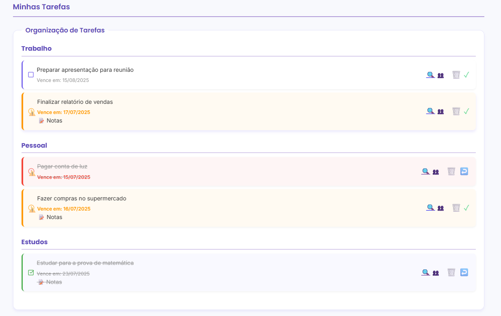

![TaskPro Demo Screenshot]()
TaskPro
Sua Lista de Tarefas Eficiente
Um aplicativo web profissional e moderno para gerenciar suas tarefas diárias com eficiência.

✨ Funcionalidades
Sistema de Usuários
- Registro e login de usuários
- Proteção de rotas por autenticação
- Senhas criptografadas
- Compartilhamento de tarefas
Gerenciamento de Tarefas
- Adicionar, editar e excluir tarefas
- Organizar por categorias personalizadas
- Definir datas de vencimento
- Anexar arquivos às tarefas
Interface Moderna
- Design profissional e responsivo
- Filtros e busca de tarefas
- Ordenação por diversos critérios
- Interações intuitivas
🎬 Demo
Minhas Tarefas
Finalizar relatório de vendas
Trabalho
Ontem
Comprar ingredientes para jantar
Pessoal
Hoje
Estudar para a prova de Flask
Estudos
Em 3 dias
Enviar e-mail para equipe
Trabalho
Atrasado
Marcar consulta médica
Pessoal
Em 2 semanas
Esta é uma demonstração visual
Para experimentar todas as funcionalidades do TaskPro:
- Clone o repositório do GitHub
- Siga as instruções de instalação
- Execute localmente em seu computador
🚀 Como Usar
1
Clone o repositório
git clone https://github.com/giannycabral/taskpro
cd taskpro2
Instale as dependências
pip install -r requirements.txt3
Crie o banco de dados
python scripts/criar_bd.py4
Execute a aplicação
python run.py5
Acesse no navegador
http://localhost:5005🛠️ Tecnologias Utilizadas
Backend
Python 3.8+
Flask
SQLAlchemy
SQLite
Werkzeug
Frontend
HTML5
CSS3
JavaScript
Google Fonts